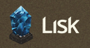

This is an effort in mapping out the current ecosystem of tools and platforms that facilitate development of ‘smart contracts’ or ‘Autonomous agents’ using blockchain technologies.
Development Platforms

RSK is the first open-source smart contract platform with a 2-way peg to Bitcoin that also rewards the Bitcoin miners via merge-mining, allowing them to actively participate in the Smart Contract revolution. RSK goal is to add value and functionality to the Bitcoin ecosystem by enabling smart-contracts, near instant payments and higher-scalability.
MultiChain allows organizations to rapidly design, deploy and operate distributed ledgers
The Open Source Protocol for Creating Digital Assets On The Bitcoin Blockchain
We enable our partners to design, deploy, and operate highly scalable blockchain networks that meet the security, privacy, and compliance requirements of the financial services industry.
Stratumn’s developer tools leverage blockchain tech to offer extraordinary enhancements into all types of systems and business processes.
 Blockchain Engine
Blockchain Engine
Blockchain Engine (BcE) is a platform designed for developers. BcE offers a suite of tools to create applications and services based off of the Emer blockchain. Not only is it simple to install, configure and integrate into any project, it’s widely available, offered in Microsoft’s Azure platform where it can be deployed on Ubuntu, in the cloud. You can manage it via JSON-RPC, a very simple protocol, and a web-interface.
Gem
Gem’s blockchain application platform transforms the way companies and industries connect to solve impossible problems.
 Counterparty
Counterparty
Counterparty is a platform for free and open financial tools on the Bitcoin network.
Eris is free software that allows anyone to build their own secure, low-cost, run-anywhere applications using blockchain and smart contract technology.
The SAFE Network is soon to provide access to a world of exciting apps where the security of your data is put above all else. In time, downloading the free SAFE software will provide access to: messaging, apps, email, social networks, data storage, video conferencing, and much more.
Stellar is an open platform for building financial products that connect people everywhere.
Rubix is an industry leading blockchain application development team, focusing on interoperability, scalability, performance and security. Rubix supports developers in creating and deploying decentralized applications that are customized for unique industry and business needs
 Evoluchain
Evoluchain
Blockchain platform for smart contracts and decentralized organisations
A powerful toolbox for building blockchain based applications.
CoinStack is a Blockchain-as-a-Service platform of Blocko to build decentralized services on Blockchain. Blockchain as a Service, Coinstack

At Lisk you can develop your own blockchain apps with modern web technologies like HTML5, CSS3 and JavaScript.
Elements is an open source collaborative project where we work on a collection of experiments to more rapidly bring technical innovation to Bitcoin. Elements are features that are proposed and developed in this technical community that in arbitrary combinations can be fashioned into sidechains.
Open source code and developer sidechains for advancing Bitcoin.
Ethereum is a decentralized platform that runs smart contracts: applications that run exactly as programmed without any possibility of downtime, censorship, fraud or third party interference.
BlockApps STRATO is a scalable Ethereum compliant platform for rapid development, deployment and management of enterprise blockchain applications. Our platform enables enterprises to develop early Proof of Concepts (PoCs) and scales all the way to full production systems.
The Hyperledger Project is a collaborative effort created to advance blockchain technology by identifying and addressing important features for a cross-industry open standard for distributed ledgers that can transform the way business transactions are conducted globally.
Api’s and blockchain frameworks
Ðapp Frameworks
Over time this list / overview might grow. If you know of any tools or platforms that were not mentioned in this overview, please comment using the Disqus below, and I will add your insights to the list.